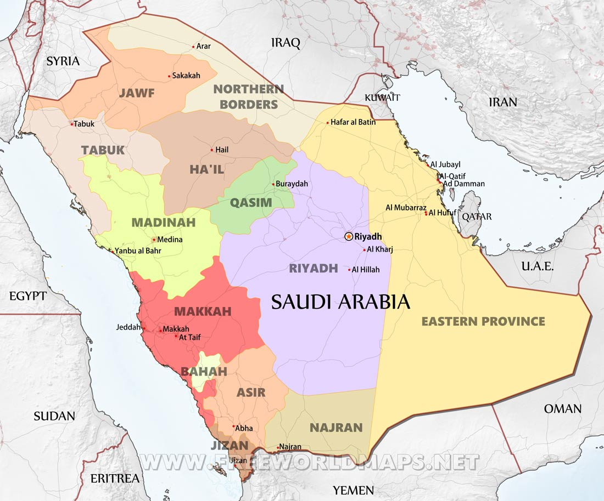

Hover over Makkah, Riyadh and easstern provice to see more info {note that you may get different clickable area due to screen size}

Saudi Arabia Information:
Saudi Arabia is located in the middle East. Suadi Arabia is bordered by and the Red Sea to the west, Yemen and Oman to the south, the Persian Gulf, Qatar and the United Arab Emirates to the east, and Kuwait, Iraq, and Jordan to the north.
Explor Saudi Arabia Using Google Earth:
Google Earth is a free program from Google that allows you to explore sateitrte enages showing the cities and landscapes of Saudi Arabia and all of Asia in fantastic detail. It works on your desktop computer. tablet, or mobile phone. The mages in many areas are detailed enough that you can see houses, vehicles and even people on a city street Google Earth is free and easy-to-use.
Saudi Arabia on a World Wall Map:
Saudi Arabia is one of nearly 200 countnes ilustrated on our Secie Ocean Laminated Map of the World. This map shows a cornbinabon of political and physical features. It includes country botindanes, major cities, major mountains in shaded relief, ocean depth Et blue color gradient, along with many other features This is a great map for students, school*. offices and anywhere that a nice map of the Nobrid is needed for education, display or decor.
Saudi Arabia On a Large Wall Map of Asia:
If you are interested et Saudi Arabia and the geography of Asia our large laminated map of Asia might be just what you need. It is a large political map of Asia that also shows many of the continent's physical features in color or shaded relief. Major lakes. nvers.caties. roads. country boundaries. coastlines and surrounding islands are all shown on the map.